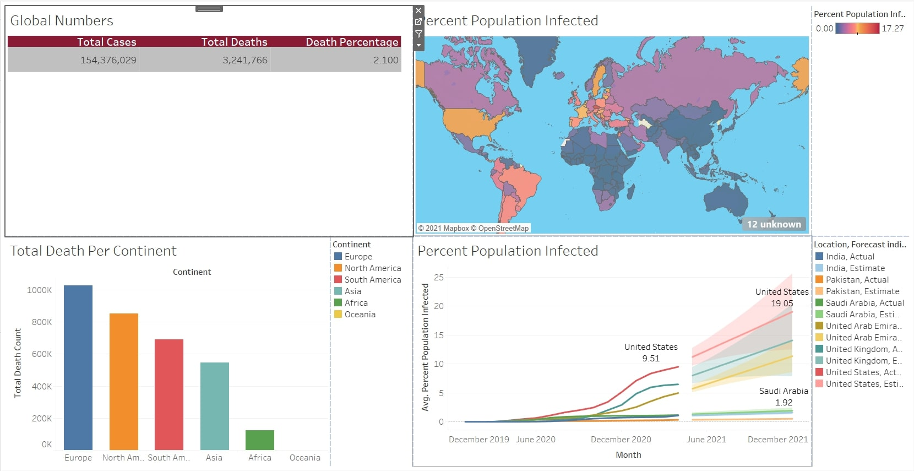
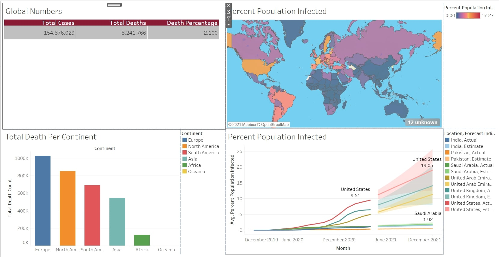

Alhamdulillah! Successfully completed Data Analyst with Python career track offered by DataCamp.
This curriculum included 16 courses in data manipulation, data visualization
with seaborn, exploratory data analysis, and streamlined data ingestion with pandas, among other topics.
 

In the project we are using SQL to do some Data Exploration using SQL queries in SQL Server Managment by provided Covid-19 Excel sheet after that we are creating visualization using Tableau.

KPMG Virtual intership include Data quality assessment, Assessment of data qyuality for analysis after that targeting high value customer and ten visualize using Tableau.

We are going to analyze a dataset from Kegel. The database we are using in this project is IMDb movies which is the famous movie collection website. The problem is first we need to find optimal no of clusters and the location of clusters.

In this Project we are using javascript for animation of Sorting Algorithm such as Bubble Sort, Quick Sort, Selection Sort, Insertion Sort and Merge Sort. By this we can also analyize the difference between different sorting Algorithm.

Docker is a container platform and technology that allows you to create, distribute, and run Docker containers. Kubernetes is a larger-than-Docker Swarm container orchestration system for Docker containers. In the repository the complete beginner guide of Docker and Kubernetes are mentioned.
In this project we are creating a Cross platform Mobile Application of WhatsApp clone which consits of a UI or Frontend. This Project helps beginners to kickstart his or her career in Flutter. However Flutter is a google technolgy and very famous in Application Development